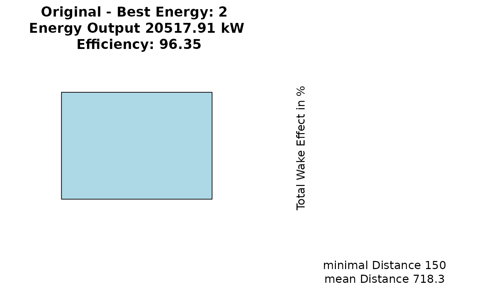
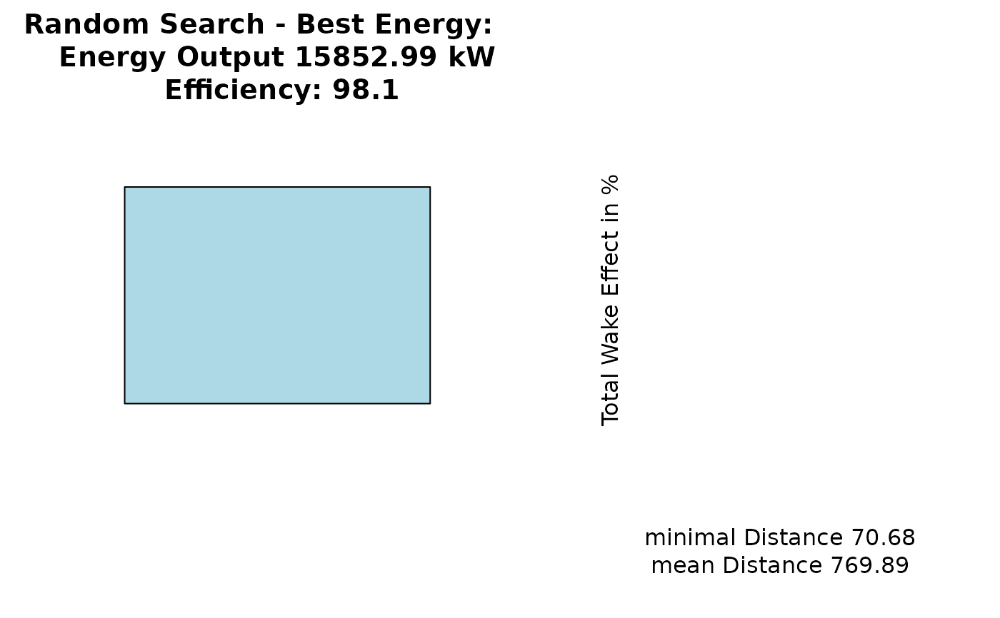

Jitter the best GA layouts inside their grid cells and
re-evaluate energy. Use this as a short post-search after
genetic_algorithm(). Terrain and Weibull follow the GA flags
when terrain / weibull are NULL. Terrain rasters from the GA
are reused when stored in result; pass a DEM to rebuild. Weibull
rasters are not stored; pass weibull_src again if needed.
Usage
random_search(
result,
area,
runs = 20,
best = 1,
plot = FALSE,
max_dist = 2.2,
terrain = NULL,
weibull = NULL,
weibull_src = NULL,
ccl = NULL,
ccl_roughness = NULL
)Arguments
- result
The resulting matrix of the function
genetic_algorithm- area
Site polygon (
sf, SpatialPolygons, or coordinate matrix). Must be projected in metres.- runs
How many jittered layouts to try per
beststart. Default is 20.- best
How many distinct best layouts to refine. Default is 1.
- plot
Draw the random-search layouts
- max_dist
A numeric value multiplied by the rotor radius to perform collision checks. Default is
2.2- terrain
NULL(default) follows the GA and reusesresult$terrainModel.TRUEdownloads only if nothing is stored. A DEM rebuilds the model.FALSEskips terrain.- weibull
NULLfollows the GA flag. Weibull rasters are not stored; passweibull_src(or a speed raster asweibull) again. Givingweibull_srcis enough; you do not also needweibull = TRUE.- weibull_src
list(k, a)shape and scale rasters (e.g. Global Wind Atlascombined-Weibull-k/combined-Weibull-A).- ccl
Path to a Corine Land Cover raster when
terrainis on.- ccl_roughness
Path to the CLC legend CSV (
Rauhigkeit_zcolumn).
See also
Other Randomization:
plot_random_search(),
random_search_single()
Examples
# \donttest{
new <- random_search(resultrect, sp_polygon, runs = 20, best = 4)
plot_random_search(resultRS = new, result = resultrect, area = sp_polygon, best = 2)


# }